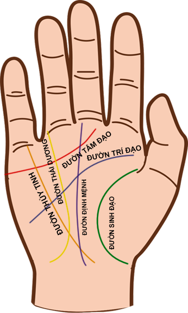

Khi xem tay, hãy giữ một nửa sự tập trung chú ý của bạn vào đó bằng trực giác, nửa còn lại
thì tập trung vào bàn tay. Hãy tự hỏi bản thân xem những khía cạnh chính trong cuộc sống của
mình là gì. Lướt qua bàn tay, chú ý đến sự đầy đặn của gò tay , chiều dài và tỉ lệ đối xứng
của các ngón tay. Hãy để ý đến những đường chỉ tay chính đạo và bất cứ điểm đạc biệt nào
trên bàn tay. Một bàn tay nếu nhiều có thể có đến sáu đường chỉ tay chính đạo, nếu ít thì
cũng phải có ba đường. Nhưng hãy nhớ rằng, dù bạn tìm được ba hay sáu đường chính đạo, thì
bạn cũng xem cả bàn tay. Cho nên, dù đang xem đường chỉ tay chính đạo, thì bạn cũng nên xem
xét cả hình dạng và kích thướt của bàn tay, các gò tay, các đường chỉ tay khác và các ngón
tay. Các đường chỉ tay thường được đánh giá theo tầm quan trọng của chúng như sau: Đường
sinh đạo, hay còn gọi là “đường đời” phải được xem đầu tiên. Đường này không bao giờ thiếu.
Tiếp đến là đường trí đạo, đường này cho ta biết trí tuệ của đối tượng như thế nào. Nếu
không có đường này, người đó có thể mắc bệnh tâm thần nặng, nhưng trường hợp này là rất ít
xảy ra. Đường tâm đạo (hay còn gọi là đường tình) cho ta biết về tình yêu và tình cảm. Đường
này càng dài và càng tiến gần về ngón trỏ thì các mối quan hệ hay tình cảm càng bền chặt.
Việc thiếu mất đường này là rất hiếm, nhưng nếu không có thì đó có thể là một điềm báo không
tốt.

Đường định mệnh hay còn gọi là “đường quý nhân phù trợ” cho ta biết nghề nghiệp và tham
vọng, thường nằm ờ chổ của đường Thái Dương hay còn gọi là đường thần Mặt Trời, hoặc “đường
vận may hay tài hoa”. Đường này cho ta biết vận may, tài năng và tiền bạc. Đường càng dài
thì vận may của người đó càng lớn. Đường Thủy Tinh hay còn gọi là “đường sức khỏe” cho ta
biết những vấn đề về sức khỏe mà có thể là do yếu tố di truyền. Trên tay thường không có
đường này nhưng nếu có thì cho biết sức khỏe của bạn khá tốt. Sau khi xem, lắng nghe mọi
chuyện xong, hãy hít thở thật sâu vào để các thông tin hiện hữu một cách tự nhiên trong đầu
của bạn. Hãy để trực giác của bạn lắng nghe những gì mà lòng bàn tay đang mách bảo. Bạn nên
nhớ bàn tay chỉ biểu đạt những điều có thể xảy ra chứ không phải là chắc chắc xảy ra và
đường chỉ tay của một người có thể thay đổi theo thời gian. Bạn hãy tự tin để kiểm soát được
cuộc sống của chính mình.